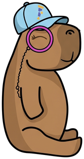

Motto: “Deploy Calmly” · ask it about the capybara customer database
The same incident, the same question, asked of a Python agent instead. The only thing that differs is the instrumentation library — so any difference in the telemetry is attributable to the convention and nothing else. Both agents are already running; each run emits its own trace.
Jaeger shows what arrived, after
gen_ai_normalizer. The OpenInference trace is half‑translated
there — that is the finding, not a bug. What the library actually emitted is
only visible in the collector's own output:
kubectl logs -l app.kubernetes.io/name=opentelemetry-collector.
Also emitted as gen_ai.evaluation.result log records,
correlated to the invoke_agent span — the shape the GenAI
convention asks for. Jaeger will not show them; it takes spans, not logs.